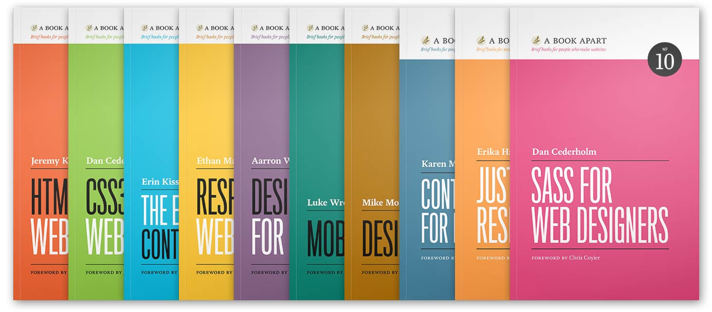

MidCamp
How to RTFM
as M->the Entire Internet
Avi Schwab
Look familiar?
The Problem:
How do we get from this...
...to this?
“Whatever you do in life, surround yourself with smart people who’ll argue with you.”
-Some sportsball man
A Book Apart
http://www.abookapart.com/

Words, words
Moving & Talking Words!
drupal.org/project/______
- Learn how often a project is used/updated
- READ THE COMMENTS
- Use the Issue Queue! Submit an issue, even if it's "I need help with this too."
When in doubt, dsm(or dpm)
but have Devel installed first!
Learn more, and get help doing it